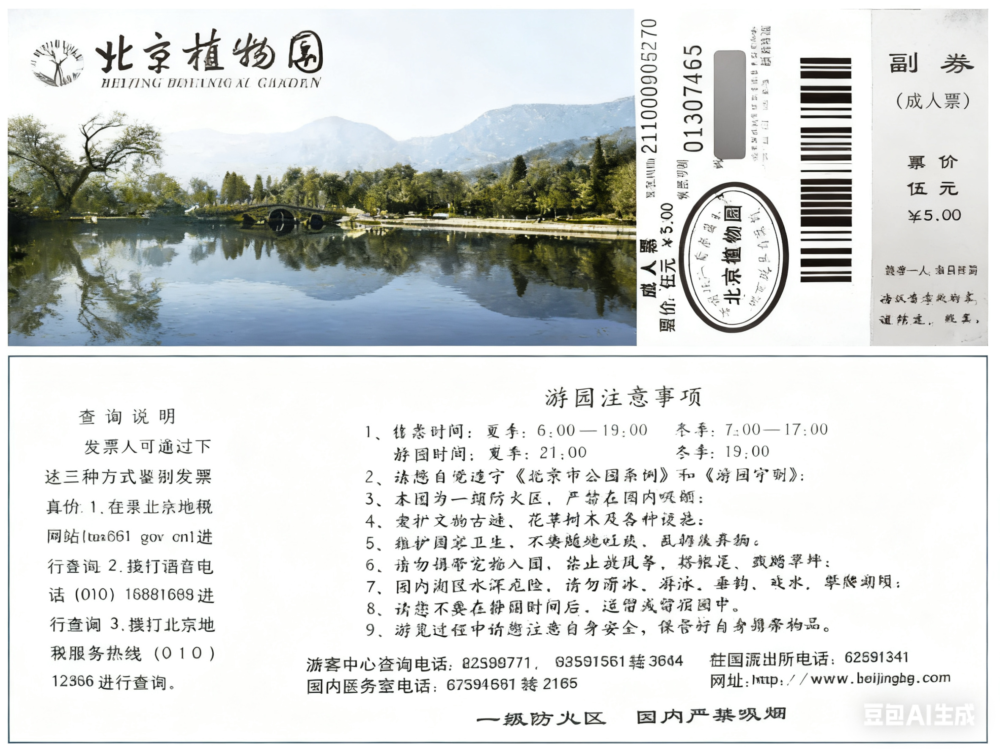

北京植物园是国家级 AAAA 旅游景区，位于京西香山脚下，距离市中心 23 公里。
植物园里有植物 62 万余株，草地 100 万余平方米。可划分为专门园、树木园、温室（greenhouse）花区和盆景园。
中心路两侧，已建成月季园、碧桃园、丁香园、牡丹园（mǔdān yuán）、芍药园（sháoyào yuán）、海棠园（hǎitáng yuán）、竹园、梅园等 11 个植物专门园。树木园包括银杏（yínxìng）松柏区、杨柳区、木兰区等 6 个展区。
另外，还有热带植物展览温室，室内分为热带雨林室、沙漠植物室和四季花园等 4 个展区，展示热带、亚热带植物 4100 多种。还有 2000 平方米的低温温室和 1350 平方米的盆景展室，共 20, 350 平方米，是亚洲面积最大的植物展览温室群。
古迹包括：卧佛寺（Wòfó Sì）、曹雪芹纪念馆、樱桃沟、“一二·九”运动纪念亭（pavilion）、梁启超墓（cemetery）等。
